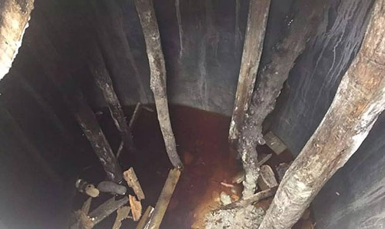
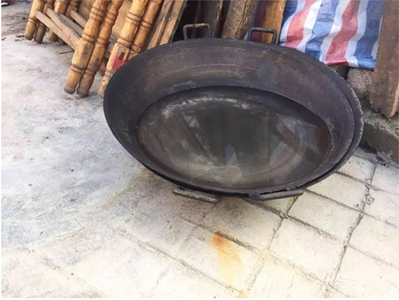
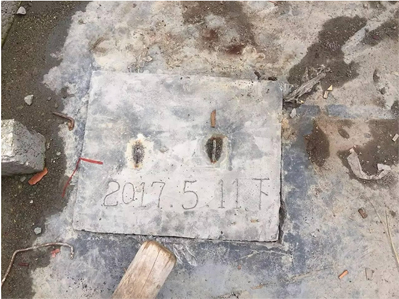
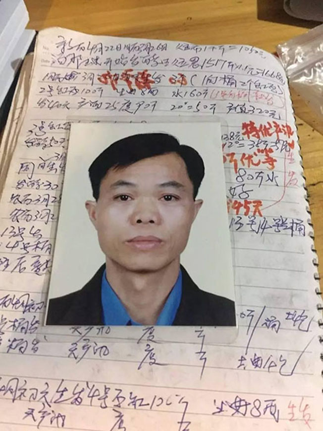
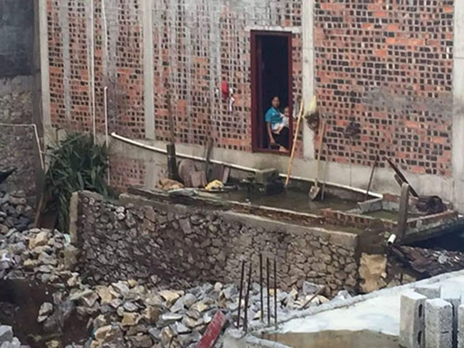
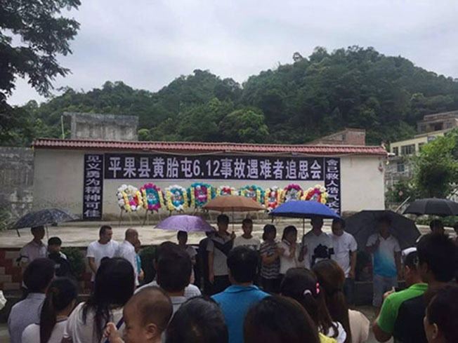

一人水窖晕倒，8名亲友施救均罹难：知道危险，但不能不管亲人
原创 每日人物 2017.6.19 一点号
在短短半小时里，一座水窖接连吞噬了村庄里的9条人命。村民凌泽敏倒在自家修建的水窖中，10多个亲友接力营救，却让悲剧不断叠加。在这场亲情和死亡的争夺战中，亲情最终输给了死亡。
发生事故的水窖，由于长时间的密封和高温，产生了致人死亡的沼气。
每日人物 / ID：meirirenwu
图文 /易方兴编辑 /楚明
1
“救命啊，有人掉水窖里了！”
6月12日，天气闷热，无雨。上午8点10分，求救声突然在村庄响起。在广西平果县汤那村黄胎屯，一场死亡悲剧拉开了帷幕。
倒在水窖中的是33岁的村民凌泽敏。他是一个平日爱喝点玉米酒、见到邻居有困难都会搭把手的热心人。此前，他跟广东阳江市打工的工厂请了假，特地赶回老家，为的是家中一项至关重要的大事——修房子。
这一天，凌泽敏家正在盖的楼房已经到了最重要的一步——清理水窖，一旦这一步完成，修建工程才能彻底完工。
黄胎屯屯长梁院成说，距离广西南宁不到120公里的黄胎屯，地处大石山区，整个屯子又在半山腰上，地下都是山石，一没有地下水，二没有河流。
当地人洗锅之后的水都舍不得倒掉。
村民们通常在自家门口的地下，挖一个深约3米的圆柱形深坑，做好防水之后，留出一个供一人进出的小口，如同一个埋在地底的窄口水瓶。一场雨过后，雨水会储存在水窖里，成为人们的水源。
凌泽敏的亲哥哥凌泽环，本来是要在6月12号这一天，回家同弟弟一同清理水窖的。
当天早上8点，凌泽环骑着摩托车，从平果县出发，沿山路驶向15公里外的家。烈日下，穿着短袖衫的他觉得热不可当。
此刻的黄胎屯刚刚苏醒，家家户户都忙着准备早饭。凌泽敏起床后，早饭都没顾得上吃，喊上自己的叔叔，决定先行清理水窖，不等哥哥了。
周边的邻居说，眼看房子快要建好了，凌泽敏整天都很高兴，“他急着想把水窖弄好”。
凌泽敏的叔叔凌福谦今年63岁，叔侄二人关系一直不错。从5月11日水窖铺好水泥之后，叔叔就把水泥盖子盖在水窖上，以免小孩掉到水窖里。
事发水窖的水泥盖上，标记着修好的日期：2017年5月11日。
等一个月后水泥干透了，水窖清理后就能用了。
6月份是广西炎夏的开端，雨水充沛，阳光炽热。在等待水泥干透的一个月时间里，一些雨水透过缝隙流进了人工封闭的水窖里。
8点10分，叔侄俩人一同抬起20多斤的水泥盖子。凌泽敏顺着水窖的梯子爬了进去，叔叔则在上面守候着。透过半米宽的窖口，可以看到水窖里竖立着七八根用于支撑的木棍，水窖底部的水刚刚没过脚踝，呈现出红褐色。
凌泽敏下去之后不到2分钟，叔叔凌福谦看到，正在拆除水窖里木板的侄子，突然倒在了水池底。凌福谦急了，在水窖口大声呼喊着“凌泽敏”，但凌泽敏一动也不动了。
2
呼喊声引来了附近的村民，邻居凌老太正在家中做饭，听到声音走出来时，看到凌福谦正在往水窖里爬，只有半个身子露在外面。
63岁的凌福谦想救自己的亲侄子。8点12分，他顺着梯子爬下去。
自从侄子家开始修房子以来，算上凌福谦在内，家族的几个老小几乎天天过来帮忙。
邻居们看到，凌福谦下井后的第一件事就是抱起倒在水底的侄子凌泽敏，他摇晃了几下凌泽敏，但侄子没有反应。 他坐在水窖底，刚刚有力气把凌泽敏抱在自己腿上，不到半分钟的时间，也晕了过去。
“救命啊，有人掉水窖里了！”在水窖口等待的村民一看都着急了，放声大喊。求救声惊动了附近的村民，“救命啊”的声音很快就连成了一片。
此时，隔壁汤那屯以贩牛为生的许宝宁骑摩托车恰好经过这里。村口小卖部的店主说，许宝宁开着摩托车都快到村口了，“但听到有人喊救命，马上又把摩托车开了回去”。
8点14分，许宝宁把摩托车往路边一撇，就钻到了水窖下，成了下去的第三人。
呼救声也惊动了家住20米外的凌福斌。凌福斌穿着拖鞋，提着猪桶，刚刚喂完自家的猪，听到呼救声，扔下猪桶，拔腿就跑，在他身后的姑姑凌金炼“追都追不上”。
3
8点15分的时候，呼救声开始夹杂着哭喊。水窖中不省人事的已有3人。村民们开始推测下井昏迷的原因。“肯定是触电了！”有村民喊了一句
。当凌福斌一路狂奔到水窖口时，村民们已经拉下了附近的电闸。凌福斌“安心”地爬下水窖救人
。太阳渐渐爬上来，温度升高了，从水窖口往里看，红褐色的水闪着光。
倒在井下的4人对外界的呼喊毫无反应。有人看到，唯一有生命迹象的是最后爬下去的凌福斌。他仰面朝上，嘴巴一张一合。
但十几秒后，他也不动了。
如果不是这起意外，凌福斌在村中还有很多事情要做。 黄胎屯位于广西的“大石山区”，只能勉强种点玉米。大部分凌氏家族的青壮年都选择去广州打工，常常从15岁初中毕业就外出，一直打工到55岁。
凌福斌今年52岁，家族人劝他继续在广州打工几年，但他选择提前回家。他在广州报班学习了酿酒技术，打算回家创业。
凌福斌家里放着成堆的酿酒材料和笔记。在他自家的小楼前，大概十多平米的地方，放着自己琢磨出的酿酒设备——银白色的铁罐，还有一个大锅。酒糟原料按照日期被整整齐齐地摆放在屋里，日期都停留在6月12号之前。
凌福斌的酿酒笔记。
4
一切都发生在十多分钟之内。凌福斌下去后，在隔壁打地基准备盖房子的凌福东和凌福高兄弟俩也跑到现场来了。
凌福东的两个孩子已经都过了20岁。他常跟人说，“父亲的责任比天大。两个孩子都大了，我肯定要给他们盖房子”。 为了省钱，这个父亲选择亲手盖房。黄胎屯在山区，地下都是整片的石块，他花了几个月的时间，用设备把石头弄碎、运出，眼瞅着挖出了一个10米见方的地基坑
。兄弟俩跑过去的时候，装着石头的推车倒在了一边。 哥哥凌福东爬下水窖。他是第五个下去的人。
弟弟凌福高在水窖口看到哥哥不行了，也要下去，被周围的村民劝阻，“太危险了，你别下去了啊！”他的妻子有病在身，儿子也才刚刚两岁。
凌福高留下了身体不好的妻子和两岁的孩子。
但人们最终没能劝动他，“我大哥在下面，我当然要下去救！”弟弟凌福高大喊了一句，成了倒在水窖里的第六人。
8点20分，第七个进入水窖的人是凌泽耀，他刚到井底就感觉头晕目眩，赶紧往上爬，爬到一半被人拽了出来。他试图劝阻后来的施救者，“我跟他们说，我身体这么好下去都扛不住，你们就别下去了，其实我们都知道有危险，但自己的亲人在水窖里面，谁都没法不管”。
紧接着，梁院学、黄忠宝、黄忠宁先后爬下水窖救人，他们是下井的第八、第九、第十个人，也接连倒了下去。此时是8点33分左右，距离8点10分第一个倒在水窖里的凌泽敏才过去不到半个小时。有村民还给在回家路上的凌泽环打电话，“不好了，你弟弟出事了，好多人都掉到水窖里了！” 凌泽环接到电话的时候，摩托车还开在山路上，一听电话，他急了，“我当时第一反应，就是我弟弟是不是掉下去摔伤了”。
他用力拧了一下油门，赶到家时是8点40分，“乡里乡亲围着我家的水窖，还有哭声和喊声，我当时就觉得不妙”。 他简单问了下情况，依旧选择下井，他是第11个进入水窖的人。这一次，村民们拿出麻绳捆在他的胸上，以免他也爬不上来。
“我一下去，那种刺鼻的味道这辈子都没有闻过。黑暗里也看不清楚谁是谁，摸到一个人的手臂我就往上拉，拉了一半我就没有力气了，也就不到几十秒钟，我眼睛一黑，就什么都不知道了。”凌泽环说.
5
8点50分，昏迷的凌泽环被村民用麻绳拽了上来。直到10分钟后，他才苏醒。
直到此时，村民们才明白水窖里的人并非触电，而是井下有毒气。“我们赶紧找来电钻和大锤，在旁边挖出了一个1米直径的洞口。”村民凌先生说。他们用电风扇对着洞口吹风，又放了一只鸡下去，看到鸡没事，才开始救人。9点10分，开好洞口之后，又有4个村民进去救人。这次，通风之后的水窖终于没能使人昏迷，村民们陆续将水窖底部的昏迷者抬了出来。
此时，距离第一人晕倒在水窖底部的时间，已经过去了1个小时。先后有15人进入水窖施救。在最早下去的10个人里，除凌泽耀被拽出外，其他9人全部昏迷。
由于山路难行，救护车在10点左右才陆续赶到，直到下午1点昏迷者才全部被送到平果县人民医院抢救。
根据医院通报，截至晚上6时50分，9名重度昏迷的村民抢救无效，永远离开人世。6月13日，平果县“6·12”意外事故调查组公布了最新的调查结果。经调查，此次事故为沼气中毒所引发，涉事村民在建家庭储水池的过程中，储水池底部残留有13cm高的发黄混浊积水，池内有陈旧木头、木屑和其他杂物，施工后在高温环境下封闭了32天，储水池内在高温厌氧条件下产生了沼气。
这场9人去世的事故，给全村带来了巨大的震动，也给每个家庭带来了几乎毁灭性的打击。9人之中，除1名60岁以上的老人外，其他全是青壮年。事故之后，留下8个遗孀，14个孩子没有了父亲
水窖，曾一度带给这个缺水的村庄希望，如今，家家户户再谈起水窖，更多的是沉默不语。
黄胎屯村民曾修建管道，试图从有水源的隔壁村引水，但由于村与村之间的矛盾，隔壁村把水管人为地破坏了。
6月18日，是黄胎屯“612事故”遇难者的头七。天一亮，村民们自发组织了一场追思会，悼念舍己救人的村民。
6月18日，村中举行追思会，悼念死去的村民。 遇难者的亲属依偎着，怀抱逝去亲人的相片，打着伞站在烈日下。他们用伞遮住阳间的阳光，为已经阴阳相隔的至亲们送行。
凌莲春翻箱倒柜只找到哥哥凌福斌的几张证件照。她很后悔，没能在哥哥生前和他多拍一些照片。
每人互动
如果亲人遇到危险，你会奋不顾身去施救吗？ 文章为每日人物原创，尊重原创，侵权必究。
想看更多，请移步每日人物微信（ID：meirirenwu）。
本文为一点号作者原创，未经授权不得转载
收藏 | 投诉